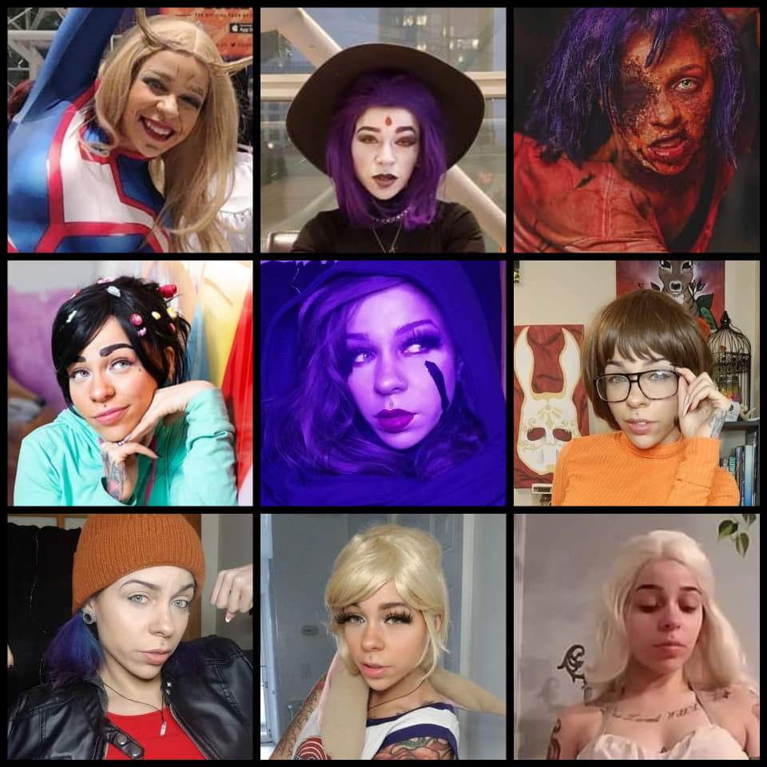

Bio and Experience

The artist behind C.S. Media
Hello and welcome to my digital portfolio. My name is Chantel Stafford, and I am a New York transplant, from Philadelphia, PA.
I have taken the time to code this portfolio showcasing a variety of work I am extremely proud of, and while I am comfortable with HTML and CSS,the adobe Creative Cloud is where I have made my home, from Lightroom, to InDesign I am passionate and driven about all things that combine digital media, visual communication, and art. If you have any questions about my experience, or would like to see case studies, and media campaigns, please contact me and let me know!